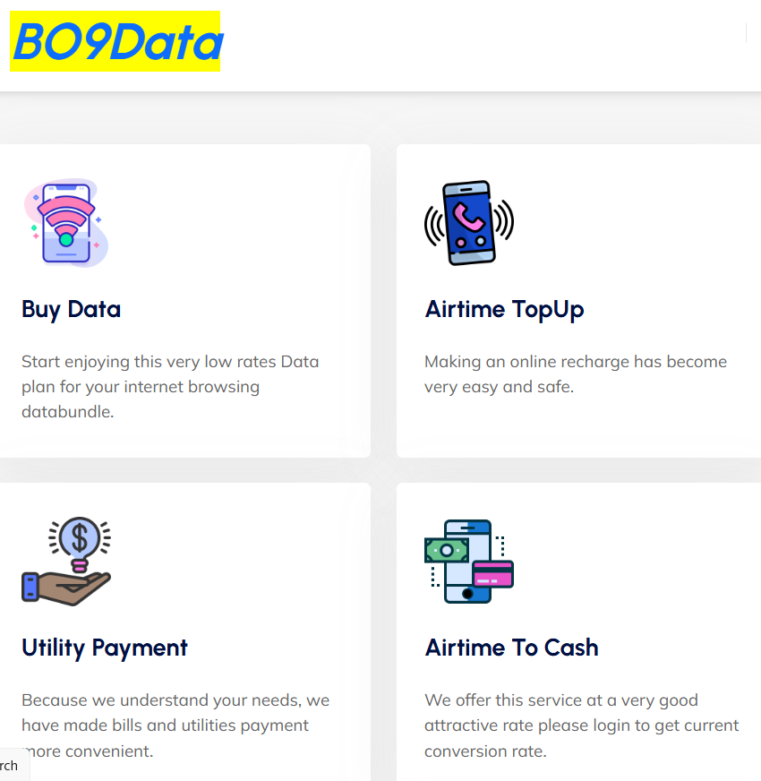

Mustapha Umar Mustapha
about me
Hello! My name is Mustapha Umar Mustapha. I am a web developer based in Maiduguri, Borno State, Nigeria.
I have a passion for creating beautiful and functional websites that provide an excellent user experience.
With a strong foundation in HTML, CSS, and JavaScript, I enjoy bringing ideas to life on the web.
Summary
professional with 14+ years experience in telecom marketing,
specializing in customer engagement, sales growth, and product promotion.
Brings 4 years of teaching experience with strong communication and leadership skills.
Known for adaptability and delivering consistent results.
Education
- Bachelor's Degree in Education English - kashim ibrahim University of Maiduguri (2022-2025)
- diploma in computer science kashim ibrahim college of education maiduguri (2017-2019)
- NCE in Arabic nd islamic studies - kashim ibrahim college of education maiduguri (2014-2017)
Work Experience
- Marketing Executive at New millionium resource Nigeria (2010-2024)
- Developed and implemented marketing strategies that increased customer engagement by 20%.
- Led promotional campaigns that resulted in a 15% increase in sales.
- Collaborated with cross-functional teams to launch new products successfully.
- English Teacher at Abbaganaram JS School (2020-2024)
- Taught English language and literature to students aged 14-18.
- Developed lesson plans and educational materials to enhance student learning.
- Organized extracurricular activities to promote language skills and cultural awareness.
- Chief Executive Officer
CEO of gtdata global (2023-present)
gtdata global
CEO of bo9data telecom (2024-present)
bo9data telecom

- Founded and currently lead a tech company (GT GLOBAL) specializing in web development and digital solutions.
- Oversee all aspects of business operations, including marketing, sales, and project management.
- Drive innovation and growth through strategic planning and customer-focused solutions.
Skills
Web Development: Proficient in HTML, CSS, JavaScript, and responsive design.
Communication: Excellent verbal and written communication skills.
Leadership: Proven ability to lead teams and manage projects effectively.
Trainer: Experienced in conducting training sessions and workshops.
Customer Engagement: Skilled in building and maintaining strong customer relationships.
Sales Growth: Track record of driving sales and achieving targets.
Product Promotion: Expertise in marketing strategies and promotional campaigns.
Languages: Proficient in English, Arabic, and Hausa.
Media: Skilled in using various media platforms for communication and promotion.
Hobbies
Volunteering, organizing events, teaching kids, political enlightenment nd activities, reading, writing,
enjoying tea, youth mentoring, community outreach, drawing, sketching, photography, content creation, crafting..
Award
I have been recognized by several organizations, including academic, political, business, and community groups.
I have also received awards from Airtel Nigeria, MTN Nigeria, and Glo.
In addition, I was honored with two secondary school teachers’ performance awards,
along with several awards from student organizations.
How To be creative
- Stay Curious.
- Give Yourself a Play Mode
- Capture Ideas Immediately
- Steal Inspiration (Legally 😄)
- Play with Constraints
- Try Micro-Creations
- Ask “What If?” a Lot
- Feed Your Mind Strange and Beautiful Things